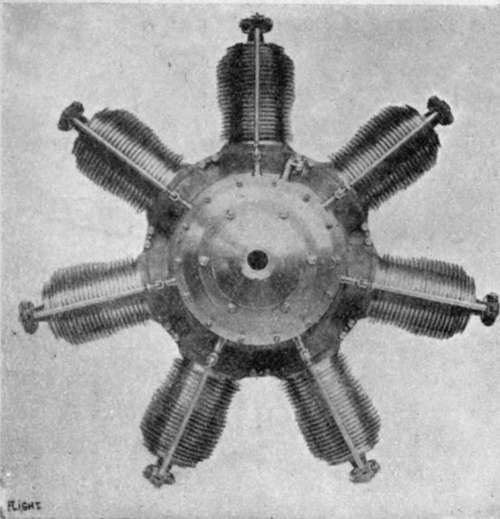

The Power Unit. Part 2
Description
This section is from the book "All About Flying", by Gertrude Bacon. Also available from Amazon: All About Flying.
The Power Unit. Part 2
The engine which we have been describing works upon what is known as the 'four-cycle' system— that is, the piston makes four complete strokes for every working or 'power' stroke. In the ordinary form of steam-engine, where the piston is forced backwards and forwards by the steam pressing upon it at each end of the cylinder in turn, every stroke is a power stroke. But, as we have seen, in the petrol-engine the piston is given a power stroke only when the explosion forces it to one end of the cylinder, and the impetus it thus obtains has to tide over three more strokes—the 'exhaust' which forces out the spent gases, the 'induction' which sucks in the new, and the ' compression' which compresses them before the explosion gives the next power stroke. The work is therefore done—if I may be allowed so to express it—in jerks, or at least would be if suitable means were not taken to prevent it. The heavy fly-wheel, which has the property of absorbing surplus energy at a time when it is not needed and yielding it up again when it is wanted, is one of these means, and in addition the majority of motor-car engines, and all aeroplane engines, have a number of cylinders each doing its power stroke at a different moment, and so, in this way, the jerks are less violent and follow each other more frequently. The aeroplane engine, although it resembles and was evolved from the motor-car engine, is not the same. From the very beginning it was discovered that the peculiar conditions of flight demanded a special type of motor, and the Wrights and other pioneers had to construct their own variations. In addition to having to be specially light the aero engine must also be peculiarly efficient; for all the while it is driving the aeroplane through the air it is, as it were, climbing a perpetual hill. Nowadays when planes are better designed, and there is more lift about them, and greater variation in the angles at which they fly, the engine, as we have already seen, can be throttled down and not urged all the while to its greatest efforts ; but in the early days when there was no ' margin,' and the machines could only just manage to get into the air and keep there, the motor must be working 'all out' all the while, and doing so without any personal attention, for the aviator had his hands (and feet!) too fully occupied with the steering and balancing of his craft to attend to anything else.
One great difficulty to contend with in the petrol-engine is the keeping of the cylinders sufficiently cool. The constant explosions raise the gases to a high temperature, and the interior of the cylinder would soon get extremely hot if means were not taken to prevent it. Overheating renders efficient lubrication impossible, and damage to the cylinder walls wrould quickly result, to say nothing of the trouble which would arise from the premature explosion of the mixture—or 'back-firing,' Petrol-engines are therefore carefully and elaborately cooled, either by air or water. With water-cooling, water is kept constantly circulating through a space known as a jacket,' outside the cylinders ; and so that it can be used over and over again, the water is itself cooled by being continually passed through a radiator—an arrangement of tiny tubes about which the air can freely blow. In air-cooled engines the contact of the air upon the outside of the cylinders is relied upon to cool them, and so it is obvious that air-cooling can best be employed when the cylinders pass very rapidly through the air.
This is the case with the Gnome rotary motor— the famous aeroplane engine which has played so great a part in the progress of aviation. It was in the summer of 1909 that the Gnome came into fashion, and its advent was almost sensational. In the middle of the great Rheims meeting Farman fitted one into his biplane, and four hours afterwards went out and beat the world's records for length and time of flight and won £2000 by so doing. 'Have you seen the wonderful new engine ? ' was the question in everybody's mouth. ' A Gnome would make even a tea-tray fly!'
The Gnome motor in its original and commonest form has seven cylinders arranged like the spokes of a wheel or the rays of a conventional star ; and it has this great peculiarity, that whereas in the vast majority of other engines the cylinders are stationary and the main shaft revolves, in the Gnome it is the main shaft which is stationary while the cylinders are compelled apparatus. To aid them in their cooling, the polished steel cylinders are made with a number of ribs or fins on the outside, which facilitate the circulation of the air around them.
(Flight)
Monosoupape Gnome Engine (80 H. P.).
Of course there are corresponding disadvantages. One is the lubrication which, with all high-speed motors, is a serious matter. With a Gnome only the to revolve around it. There are two special advantages about this unusual proceeding. For one thing the revolving cylinders form their own fly-wheel; for another, their rapid progress through the air is sufficient to keep them cool without any further purest castor-oil can be employed, and it is used most lavishly because of its cooling effect—practically a gallon of oil to every three gallons of petrol. Those who fly behind a Gnome can testify to how freely and light-heartedly it flings its lubricant around ; while the smell of burnt castor-oil belongs as essentially to a flying-ground as the scent of clover to June meadows.
At one time it was held that the gyroscopic effect of the rotary motor must have important influence upon the steering of the aeroplane; but experience seems to prove that—to use the expressive colloquialism—' there's not much in it.' Of more far-reaching importance is the fact that the Gnome cannot be throttled down to the same extent as many other aero engines. It has to run 'all out' ; and the only way in which the speed can be greatly varied is by cutting off the motor and switching it on again, which of course gives the aviator more to do. The latest and lightest variation of the Gnome is the ' monosoupape,' differing chiefly in a matter of valves.
Continue to: